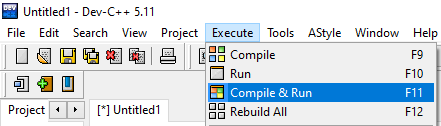
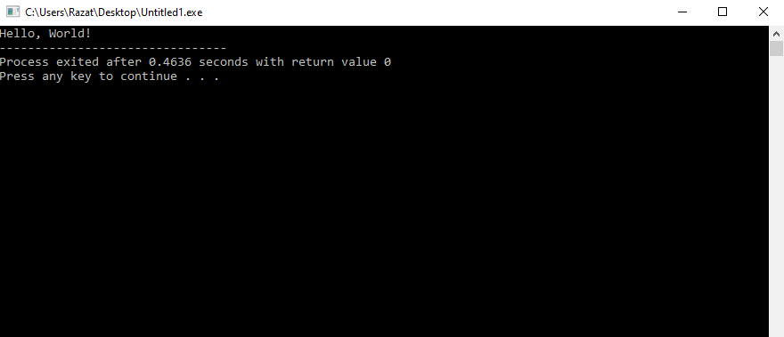

Structure of the "Hello, World!" C++ Program
In the last chapter, we introduced the idea of what a computer program does. Let's now write a simple C++ program.
Open up the text editor/IDE of your choice, copy the content below and paste it:
The above code is a program (i.e. a series of steps) for the computer to execute. We'll look at what was pasted after we've compiled the program. For now, let's compile and run the program. To do that, you usually would just press a button. For example, I use DevC++, so on the menu bar, I would click 'Execute' -> 'Compile and Run' to execute the program.
Compiling programs varies on the editor/environment of your choice. You will need to find instructions accordingly.
Once you've executed the program, a console window should appear that contains the output of your program. When I have compiled the above code, this is how my console window appeared:
As you can tell, our program outputted the sentence Hello, World! to the console window. And that's it! You've compiled and executed your very first C++ program.
In case you're wondering, every program that you'll see on this website will be compiled and executed in this way. The source code (i.e. the code that you've copied & pasted) might vary program to program, but the process of compiling and executing the program will always be the same.
Let's now look at the various statements of the 'Hello World' program.
The following points will seem confusing at first, but you'll understand them soon enough:
-
// This file is named chp1-00.cpp
Statements followed by a // are called a comment.
Note: Comments are for readers only.
Comments have no significance on the execution of the program. Programmers write comments to provide useful short explanations for the code they've written. In-line comments (a.k.a. Single line comments) follow the above notation, and only comment out the characters written on that line. If you'd like to write a comment that takes up muliple lines, use a multi-line comment:/*
Your comment(s)
*/ -
#include <iostream>
Essentially, this header tells the computer to include the iostream library. A library contains code that is either necessary or useful to your program. For this program, including the iostream library allows us to print statements to the console. -
using namespace std;
This statement includes the standard namespace in your program. Without using this statement; cout statements will be written like so:
std::cout << -
int main() {
}
The above code is called the main function.
For now, just know that this function can be found in all C++ programs; it is the function called when the program runs i.e. this is where the main code of the program is found. -
cout << "Hello, World!";
As you might guss, this C++ statement outputs the message "Hello, World!" onto the screen.
References:
tutorialspointcplusplus.com
Learn-cpp